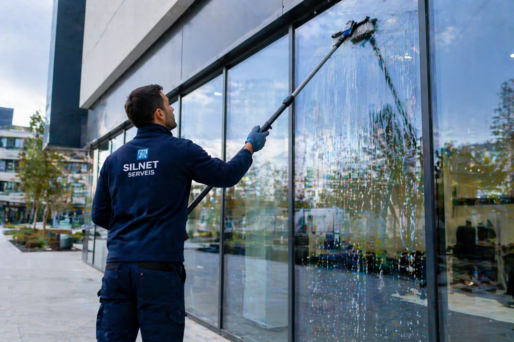

Espacios de trabajo limpios, profesionales y desinfectados
En Silnet Serveis ofrecemos un servicio especializado de limpieza de oficinas en Barcelona, diseñado para mantener espacios de trabajo impecables, higiénicos y organizados.
Un entorno limpio mejora la productividad, la imagen de la empresa y la salud de los trabajadores. Por eso adaptamos nuestros servicios a cada oficina y horario laboral.
✔ Limpieza de puestos de trabajo
✔ Desinfección de superficies y zonas comunes
✔ Vaciado de papeleras y gestión de residuos
✔ Limpieza de suelos y moquetas
✔ Higienización de baños y cocinas
✔ Limpieza de cristales
✔ Vitrificado de suelos
✔ Suministro y reposición de papel higiénico, jabón de manos y otros consumibles

✔ Ponemos a su disposición las fichas técnicas de todos los productos utilizados
✔ Personal profesional y discreto
✔ Horarios flexibles
✔ Productos ecológicos y seguros
✔ Mantenemos continuidad en el personal para ofrecer un servicio más cercano y de confianza
Solicita un presupuesto para limpieza de oficinas